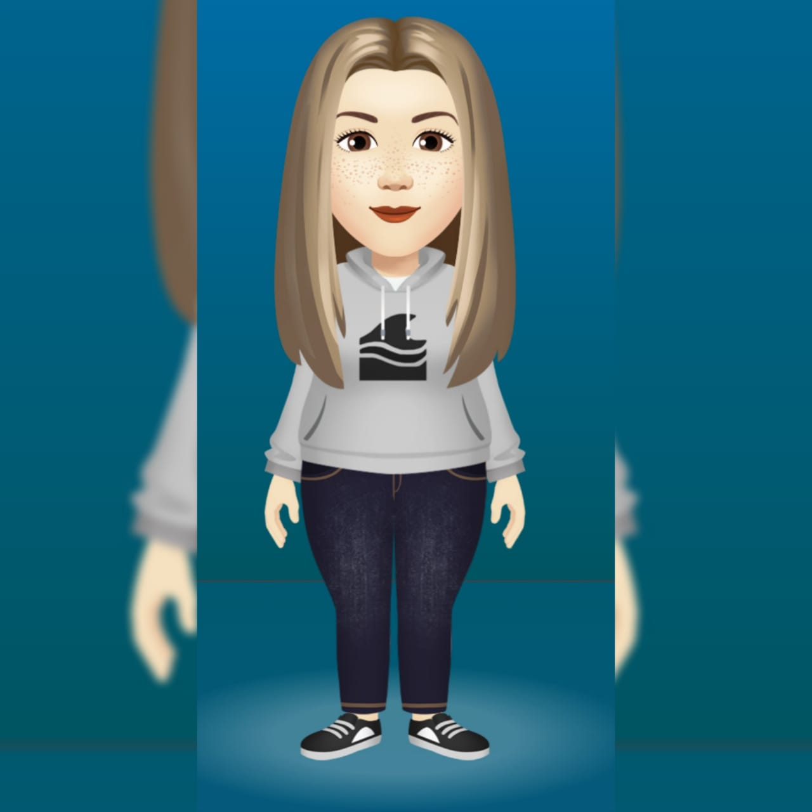

Desde pequena nunca gostei de ler pois os livros que me eram apresentados eram apenas de estudos ou literatura clássica nunca entendi muito bem como tanta gente podia ser apaixonada por livros se tinha filmes rs, pois é, a vida me deu uma reviravolta e finalmente aos meus 19 anos eu decidi tentar ler um livro pela primeira vez(sim primeira vez).
Depois de vários dias lendo apenas 2 páginas, depois 5 páginas, depois 10 páginas...
eu percebi que como qualquer hábito é preciso insistencia e hoje graças a Deus eu posso dizer que sou Louca por livros com uma coleção de 120 livros físicos e 150 livros em pdf no kindle, Quero levar essa incrível experiencia a todos.
Não é que você não goste de ler, você ainda não gosta de ler!!
